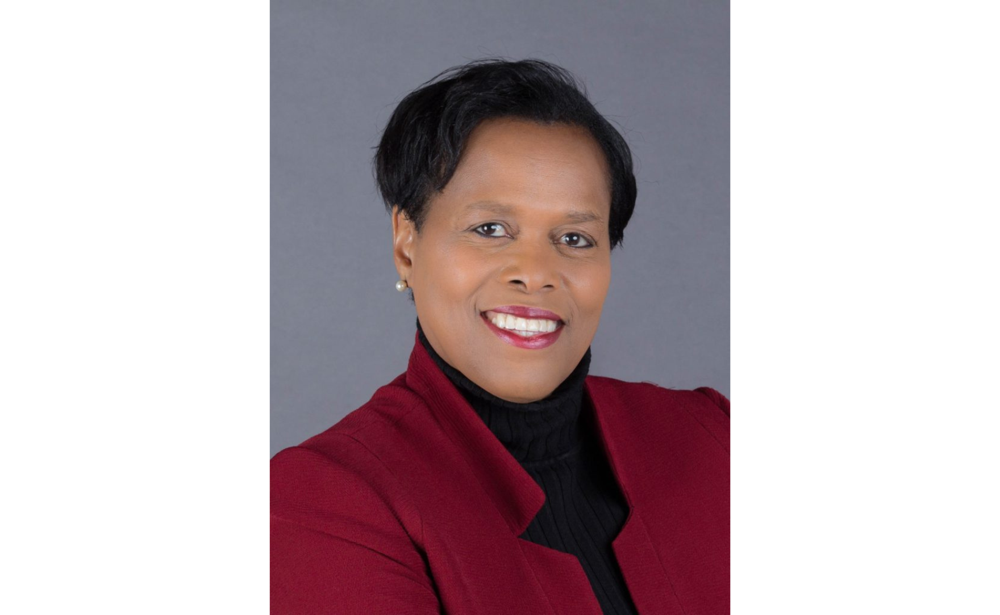

The first day of school marked a new beginning for Syracuse’s youngest students, and for many, an early sign of how far behind they already were.
Data compiled by the Syracuse City School District (SCSD) revealed that a majority of incoming kindergartners lacked the skills needed to start school on track. The report noted the percentage of children considered “ready” and “not ready” for kindergarten alongside whether their family was reported to live in poverty or not, broken up by census tract. Census tracts are small, geographic areas defined by the U.S. Census Bureau to track local demographics.
According to the SCSD, out of the 55 census tracts in Syracuse, more than half of the students in 47 of those tracts did not meet kindergarten-readiness standards.
Heather Carson, a kindergarten teacher working at Dr. Edwin E. Weeks Elementary School in Northern Syracuse for over 20 years, believes that this dataset is too low to be accurate.
"I don’t think it’s correct,” she said. “In a classroom of 23 students, I would only consider five of them to be ready.”
Carson has watched student preparedness decline steadily over the past two decades, she said. She attributes much of this shift to changes in family structure and an increase in immigration throughout surrounding neighborhoods.
“Kids don’t know the culture of school,” Carson said.
The majority of her students did not attend or have the opportunity to attend prekindergarten, she said. Dr. Edwin E. Weeks Elementary School only has the resources for two prekindergarten classes, even though there are enough children to fill five.
“The children selected for prekindergarten are the ones whose families sign up first, along with those who have identified learning disabilities such as speech, language, or occupational therapy needs,” she said. “Even if you could afford it, they’re not available to everyone.”
Carson added that limited access to prekindergarten and daycare programs is a citywide issue. As a result, students lack skills that she and her colleagues, Jess Sudol, Michelle Wranesh, and Patrick Stoner, consider essential for entering elementary school, including being able to:
They consider students “kindergarten ready” when they can regulate their emotions in a developmentally appropriate way, ask for help when needed, listen to and follow one or two-step directions, sit in a chair or on the carpet, and line up in a single file.
Because of this learning curve, Carson does not jump into academics until after the first month of school. She stresses the importance of helping her students establish routines through fun, structured activities, such as games intended to strengthen memory and repetition, before beginning any formal literacy or math instruction. Carson noted that in today’s digital age, it is also difficult to capture the attention of her students for an extended period of time.
“We are now a video-based population,” she said. “They aren’t able to sit and listen to a story for ten minutes.”
So instead, Carson will put on a video on the smartboard of someone reading the book, “and they’ll watch it like a movie…yet, they still will struggle to understand or answer questions about it.”
At Carson’s school, every kindergarten class has an assistant to help the teacher keep students engaged and provide children with one-on-one instruction.
“This year, my assistant speaks Arabic, which comes in handy because seven of my students speak only Arabic, though in previous years, that number has been 10 or more,” Carson said.
The language barrier makes communication even more difficult for her students, who are already navigating a school system they are unfamiliar with, she said. However, the most significant barrier her students face is poverty, Carson said.
In Census Tract 24, where Dr. Edwin E. Weeks Elementary School is located, one-fourth of students live in poverty, and 88% of children overall are considered unprepared for kindergarten.
“Many of my students come to school hungry,” she said. “For most city students, their neighborhoods have high poverty.”
According to Spectrum News, nearly 50% of children in Syracuse are estimated to live in poverty, the highest child poverty rate among major U.S. cities.
"What the city can do is generate jobs and encourage businesses into our community to hire our local residents," Syracuse Mayor-elect Sharon Owens told Spectrum News.
Carson said economic stability at home makes a noticeable difference in student readiness.
“Children from households that have two working adults often arrive better prepared,” she said. “The cycle and value of education continues there.”

Additional challenges Carson and her colleagues noted include students lacking healthcare or immunizations, dental problems, irregular home schedules, and sleep issues.
Carson said that the limited help students receive at home, as well as a lack of reading and exposure to museums, zoos, or other educational opportunities that build vocabulary, all contribute to their unpreparedness.
To Carson and her peers, the challenges her students face extend far beyond academics.
“Many families in the city don’t believe in teachers anymore, which has become a hardship for teachers and a disservice for our students,” she said. “Kids aren’t encouraged to listen to their teachers or follow the rules of the school by their parents or guardians.”
Despite the challenges, teachers across the district are trying their best to bridge the economic and learning gap, one lesson at a time, Carson said.